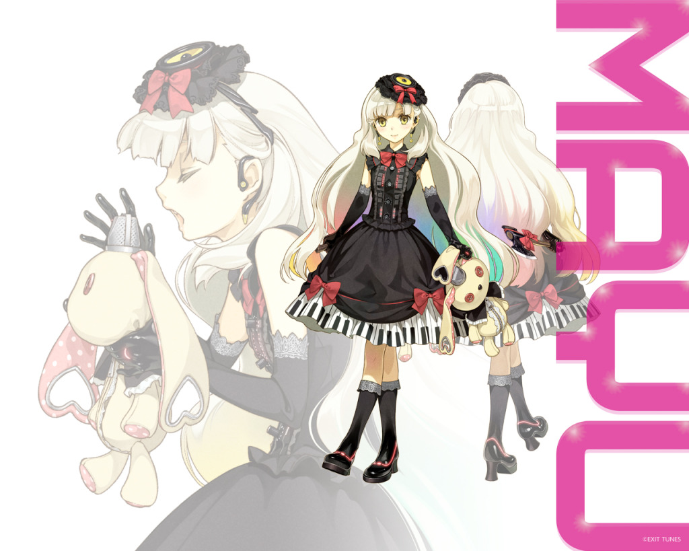
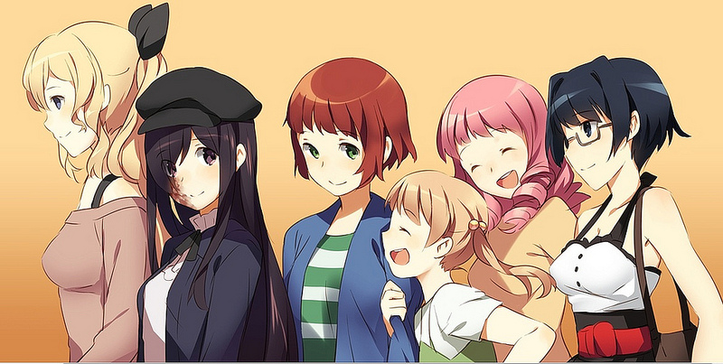

La musique
J'aime divers genre de musique, mais j'écoute principalement des musiques écrites et composées avec Vocaloid. C'est un programme de synthèse vocale, qui permet de composer des musiques avec différentes banques vocales. Vous pouvez en voir un exemple ici (chanté par Mayu, ma Vocaloid préférée).

Les jeux
J'aime jouer aux jeux, principalement les jeux vidéos. J'apprécie les jeux militaires, comme Battlefield, et les jeux de stratégie. De manière générale, j'aime les jeux d'action où il faut réfléchir et ce qui a trait à l'univers militaire. Mon jeu préféré est cependant d'un autre genre: c'est un "visual novel", où l'on voie une histoire se dérouler plus qu'un jeu, avec quelques choix à faire. Ce jeu s'appelle Katawa Shoujo, et voici le site internet. La curiosité n'est pas un vilain défaut.

La lecture
Je suis un grand lecteur, j'aime principalement le genre fantasy, ce qui touche à l'imaginaire (comme les légendes, les créatures fantastiques). J'aime également ce qui concerne l'histoire, et ce qui touche à la sphère militaire. J'ai par ailleurs commencé à écrire ma propre histoire, qui se déroule dans un monde issu de mon imagination. Si vous souhaiter y jeter un oeil, n'hésitez pas à me contacter, je vous ferais parvenir le début dès que possible.